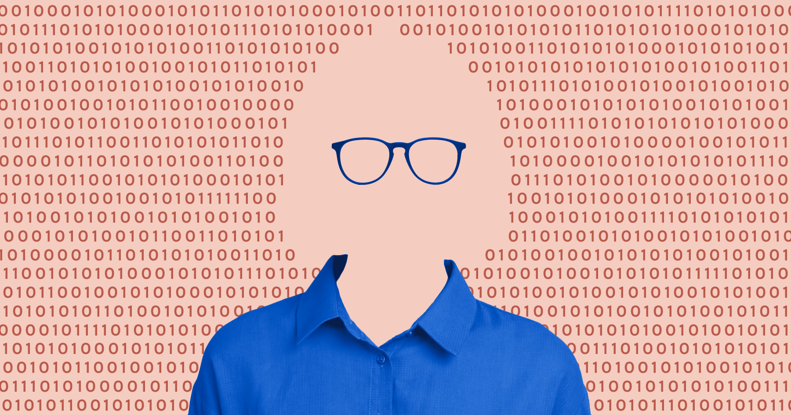

What is Implicit Bias?
Implicit bias refers to unconscious attitudes or stereotypes that affect our understanding, decisions, and actions. These biases operate automatically and often without our awareness.
For many people, learning about implicit bias is surprising because it shows how our minds make quick judgments without our awareness. Understanding this helps us recognize that bias is not always intentional, but it still shapes how we treat others and how systems operate.
Learn More:
Stanford Encyclopedia of Philosophy – Implicit BiasThis source highlights that implicit bias is complex, involving not just individual attitudes but also broader social and structural factors. We reflected on the tension between addressing bias at the personal level versus the systemic level, realizing that while our own unconscious associations matter, meaningful change also requires confronting institutional inequities. This perspective helped us think critically about how technology and AI can reproduce both individual and structural biases.
Implicit Bias Test (IBT / IAT)
The Implicit Association Test (IAT) is designed to measure the strength of associations between concepts (e.g., race, gender) and evaluations (e.g., good, bad).

Taking the IAT can be uncomfortable, but it often reveals hidden patterns in how we associate certain groups with positive or negative traits. The goal is not to label people as “good” or “bad,” but to encourage reflection on how unconscious associations influence behavior.
Bias is deeply ingrained and often invisible. It is important that we think critically about how the systems we develop can either perpetuate or disrupt existing biases. This is an important step towards more equitable technology.
Intersectionality
Intersectionality is a framework that examines how different aspects of identity, such as race, gender, class, sexuality, and disability, overlap and interact.
When multiple identities intersect, disparities can become amplified. Understanding intersectionality helps us recognize that bias is not one-dimensional, and reminds us that bias is shaped by overlapping identities, not just one category at a time.
-
Intersectionality: Mapping the Movements of a Theory
This reading offered intersectionality as a living, breathing theory that resists one-axis thinking. We considered the power of intersectionality in its ability to be applied in different ways, allowing us to better understand how multiple identities interact with systems of power.
-
TED Talk: The Urgency of Intersectionality
This TED Talk highlights how intersectionality reveals the unique injustices faced by people with overlapping identities, who are often overlooked by single-axis approaches. Naming these intersections makes hidden inequities visible and actionable. Addressing bias and systemic oppression requires attention to multiple, interacting social identities.
Intersectionality is a way of talking about how different pieces of someone’s identity intersect with each other in systems of power. It is a way of explaining why two different people can have two different experiences with the same institution, whether that institution is education, technology, or the workplace, even if they share some pieces of their identity. It is an important reminder that when we are talking about bias, we cannot just look at one piece of someone’s identity.
Video: The Danger of a Single Story
In this TED Talk, Chimamanda Ngozi Adichie discusses how stereotypes are formed and how "single stories" about groups of people can shape perception and bias.
This video demonstrates how “single stories” can flatten complex human experiences and reinforce power imbalances. We reflected on how even well-meaning narratives can unintentionally perpetuate stereotypes, and how seeking multiple perspectives is essential to creating more inclusive and equitable representations in society and technology.